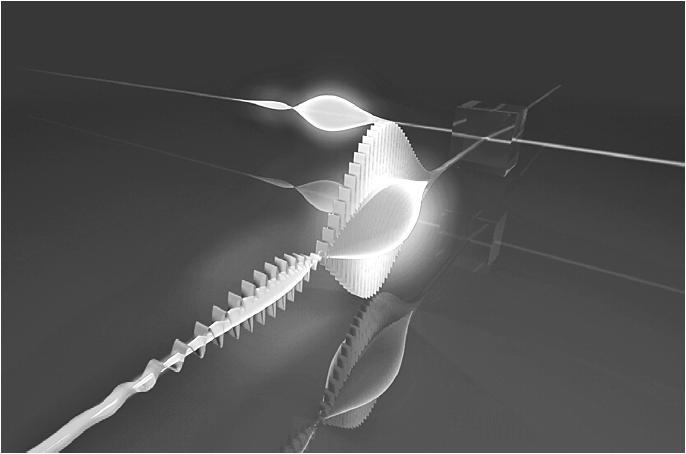

第14章 借方程的诗歌打开心灵之眼
解开标准方程下每一句话的含义
诗人西尔维娅·普拉斯（Sylvia Plath）曾写道：“第一天上物理课简直像下地狱。”[1]她继续说：
一个名叫曼兹（Manzi）先生的黑矮男人，扯着高亢而浑浊的嗓音，身着紧身蓝色西装站在教室前，手中正拿着一个小木球。他把球放在一个有沟槽的斜坡上，让它一直滚到底。之后他开始讲，设加速度为a，时间为t，而突然间，他就开始在黑板上洋洋洒洒地写满了字母、数字和等号，于是我的大脑就这样熄火了。
至少在这段重述普拉斯生平的半自传性文字中有写到，曼兹先生曾写过一本400多页的书，其中没有图画和照片，只有图表和公式。这就如同，你试着去欣赏普拉斯的诗，但不是靠自己读，而是听旁人讲。在普拉斯的故事版本中，她是唯一在这门课上拿了A等成绩的学生，但物理还是给她留下了恐惧感。
毕竟，只有数学是理性的诗歌，而诗是心灵的数学。
——戴维·尤金·史密斯（David Eugene Smith）
美国数学家和教育家
物理学家理查德·费曼的物理导论课则完全不同。诺贝尔奖得主费曼是个热情洋溢的人，平时打邦哥小鼓引以为乐，说起话来的样子更像个务实的出租车司机，而不像什么尖头尖脑的知识分子。
在费曼11岁左右时，一次不经意的对话对他产生了天翻地覆的影响。他告诉朋友，思考不过是内心的自言自语。
“是这样吗？”费曼的朋友说，“你知道汽车曲轴的形状极其复杂吧？”
“对，知道又怎样？”
“不错。现在告诉我，你在自言自语的时候，是怎么描述这形状的？”
正是这么一问，费曼认识到，思想能表现为语言就能表现为形象。[2]
后来他写道，还是学生的他，曾努力想象一些概念并对其进行形象化，比如电磁波，它是肉眼看不见的能量流，从阳光到手机信号都由它来承载。可他难以用语言描述心中所见。[3]如果连世界上最了不起的科学家之一都想象不出该如何看待一些（公认的难以想象的）物理学概念，那我们普通人该怎么办呢？
我们可以在诗歌的国度找到鼓舞和灵感。[4]让我们来看几句歌词，这几句来自美国歌手兼词曲作家乔纳森·库尔顿（Jonathan Coulton）写的一首歌，叫作“曼德博集”，[5]歌曲内容有关一位著名数学家——贝努瓦·曼德尔布罗特（Benoit Mandelbrot）。
天堂的曼德尔布罗特啊
他让我们在混沌中看见秩序，无望中看见希望
他的几何学在别人跌倒的地方获得了成功
所以，如果你迷失了方向，会有一只蝴蝶拍打翅膀
远在百万公里之外，一个小奇迹将送你归乡
在库尔顿动人的词句中，他捕捉到了曼德尔布罗特杰出的数学精髓，由此我们能在脑中形成图像——只见蝴蝶的翅膀轻柔一振，传播开来，甚至会在百万公里以外的地方造成影响。
曼德尔布罗特创造的新式几何让我们懂得，那些有时看起来粗糙混乱的事物，比如云和海岸线，却在一定程度上存在规律。视觉的复杂性可以由简单规则创造出来，正如现代动画电影制作中的神奇手段。库尔顿的诗歌也影射出了曼德尔布罗特成就中蕴含的概念——宇宙某部分细小、微妙的变化，最终会对其他一切产生影响。
你越去看库尔顿的歌词，便越会发现这概念能在生活各个方面得到更多应用——你对曼德尔布罗特的成果理解得越深刻，这些意义便越发明晰。
正如诗歌、方程中也存在隐藏的含义。如果正在看物理方程式的你是个新手，而且也未曾有人教过你怎么去看懂符号下鲜活的内涵，那么这些方程表达式对于你而言就是一片死寂。只有当你开始学习，并将隐藏内容赋予方程表达式，它的内涵才开始跳跃、流动，最后如同获得生命一般呈现于你。
在一篇经典论文中，物理学家杰弗里·普伦蒂斯（Jeffrey Prentis）比较了物理学新手和成熟的物理学家在看待方程时的差异。[6]新手看方程，不过就是在记忆中互不相关的海量方程中添加一个记忆内容。然而，层次更高的学生和物理学家，能在心中看见方程背后的意义，能看见它是怎样被置于宏观背景之下的，甚至会对方程的一些部分感同身受。
数学家要有些诗人气质，才算得上名副其实。
——卡尔·魏尔斯特拉斯（Karl Weierstrass）
德国数学家
当你把字母a看作加速度，你也许会有在车里踩油门的感觉。轰的一声！你感受到了加速的推背感。
可每当你看到字母a都需要唤起这种感觉吗？当然不必，你可不想唤起学习中的每一个小细节，否则自己会疯掉的。但是，如果你看到方程中遍布a的身影并在努力分析它的含义，那么那种推背感应盘旋在你的大脑后台，就像一个时刻准备溜进工作记忆的组块。
同样，当你把m看作质量，你也许会感受到一块50磅巨石慵懒的惯性，要搬动它可是个大工程。当你把F看作力，借心灵之眼你也许会看到力背后的秘密，正如方程F=ma所示，力的大小取决于质量和加速度：ma。也许你能体会到F背后的奥妙。力把一种举升的气势（加速度），作用在巨石慵懒的质量上。
让我们再来点锦上添花。物理术语做功意味着能量。当我们推动（把力作用在）一件东西，让它通过一段距离，我们就做了功（那是我们在提供能量）。我们可以将此概念加密到符号中，让它如诗般简洁：W=Fd。一旦我们看见W代表做功，那么我们便可通过心灵之眼，甚至通过身体感受，去想象这背后的含义。最终，我们提取出了一行方程之诗，就像下面这样
W
W=Fd
W=（ma）d
换句话说，符号和方程背后都存在隐藏信息——一旦你对概念更熟悉，它们的含义就会更清晰。尽管科学家不这么表述，但他们会经常将方程看作一种诗歌形式，以此可以迅速用符号记下他们正尝试去看清和理解的事。善于观察者能认识到一首诗的深度，诗中会有许多可能含义。同样，在学识上不断成熟的学生，借心灵之眼也能渐渐学会看清方程背后的隐藏含义，甚至凭直觉形成不同解读。并不意外，图、表格或其他图像也具有隐藏含义——在心灵之眼中，它们所呈现的内涵甚至比纸上的内容更丰富。
简化学习内容并对其拟人
此前我们提到过这点，尽管我们对如何想象方程背后的概念已有了更深的领悟，但现在它值得我们来重新审视。努力学习数学和科学的时候，我们能做的最重要的一件事，就是给脑中的抽象概念赋予生命。例如，圣地亚哥·拉蒙-卡哈尔对待眼前微观场景，就像在看待一群居住在其中的小生命，它们有希望和梦想，就像人类自己。[7]爵士查尔斯·谢林顿（Charles Sherrington），是卡哈尔的同事和朋友，同时他也是突触（synapse）一词的创造者，他告诉朋友，他从来没见过有哪位科学家能像卡哈尔一样让自己的工作充满生命力。谢林顿猜想这也许是促使卡哈尔达到他成功高度的一个关键因素。

爱因斯坦能把自己想象为一个光子。[8]这是意大利物理学家马可·贝里尼（Marco Bellini）制造的强激光脉冲（在图中靠前位置），它用于测量单个光子的形状（在图中靠后位置），我们可以通过观看这幅美丽的图景去理解爱因斯坦眼中的画面。
爱因斯坦的相对论并非源自他的数学才能（他经常需要与数学家合作来取得进展），而是源自他“假装”的能力。他想象自己是一个以光速移动的光子，然后想象第二个光子会怎样看他。第二个光子会看到并感受到什么呢？
芭芭拉·麦克林托克（Barbara McClintock）因发现基因换位（“跳跃基因”会改变自己在DNA链上的位置）的存在而获得诺贝尔奖，她曾写过自己如何对其研究的玉米植株进行想象：“我甚至能看到染色体的内部成分——实际上一切就在那里。因为我几乎感觉自己就像置身其中，而染色体是我的朋友，这感觉让我惊奇。”[9]
遗传学先驱芭芭拉·麦克林托克把她在处理的分子元素想象成庞然大物。和其他诺贝尔奖得主一样，她对研究下的元素进行了拟人，甚至和它们交朋友。
或许在心灵之眼的注视下，把正在研究的这些元素和生物机制想象成活物，还让它们有了自己的感觉和思想，会显得有些愚蠢。但是这个方法很奏效，它让研究对象鲜活起来，还能帮你看清并理解一些现象，而仅仅看枯燥数字和公式是无法靠直觉感受这些现象的。
简化也很重要。为了方便自己理解，理查德·费曼，本章前部分说到的那位打邦哥鼓的物理学家，他要求科学家和数学家简单阐释他们的概念，他这个做法是出了名的。出人意料的是，无论概念多么复杂，几乎任何一个概念都可以得到简单解释。为了酝酿简单解释，你把复杂材料分解成几个关键要素，结果你对材料的理解更加深刻了。[10]学习专家斯科特·杨（Scott Young）发展了这个理念，他称之为费曼法，这个方法要求人们找到简单的比喻或类比来帮助他们理解概念要旨。[11]
传奇人物查尔斯·达尔文的做法也跟这个差不多。在他试着对一个概念做出解释时，会想象有个人刚刚走进自己的书房。他会放下笔，努力用最简单的语言来解释它。这让他知道了如何去描述书本中的概念。类似地，网站Reddit.com有一个叫作“像5岁孩子一样做解释”的板块，在那里任何人可以发帖寻求复杂主题的简单解答。[12]
你可能会觉得，需要先理解才能给出解释。但是注意，当你和身边的人谈论学习的时候发生了什么。在试图对他人和自己做出解释时，你常会惊奇地发现，理解常常是解释的产物，而非先有理解才有解释。这就是为什么老师常说，他们第一次真正理解教学材料，是在自己去教学生的时候。
认识你很高兴！
学习有机化学的难度和去认识一些新人物比起来没什么两样。每一个元素都有自己独特的个性。你越了解它们的性格，就越能读懂它们的处境，并能预知它们在相互作用中会产生的结果。
——凯瑟琳·诺尔塔（Kathleen Nolta）
哲学博士，化学高级讲师和金苹果奖得主，该奖项授予
密歇根大学公认优秀教员
该你试试了！
脑中的自导自演
想象自己置身于研究内容之中——你正从细胞或电子的视角，或甚至从一个数学概念的角度在看世界。试着和你的新朋友表演一出戏，想象它们会有怎样的感受和反应。
迁移：把所学的知识运用到新背景中
迁移是把所学的知识从一个知识背景应用到别处的能力。比如，或许你学了一门外语之后，发现学第二门外语就比学第一门外语要轻松了。那是因为当你学过第一门外语，你获得了基本的语言学习技巧，同时你也潜在地学会了相似的新单词和语法结构，它们便迁移到了你的第二门外语学习中。[13]
学习数学但只把它应用在一个特定学科，比如会计、工程或经济学，这就有点像决意不再认真学另一门外语——只坚守着一种语言就行，只需额外再多学几个英语单词就行。许多数学家觉得，完全针对特定学科去学数学的方法，会让你更难以灵活且创造性地运用数学。
他们觉得如果你按他们教的方式学数学，即围绕着抽象且形成了组块的概念精髓，而脑中没有特定应用范畴，你就能获得轻松将知识迁移到各种应用的技能。也可以说，获得这样的技能，就如同语言学习中获得了语言的基本学习技巧一样。比如，你也许是一个物理系学生，但你能通过运用你的抽象数学知识，迅速领悟如何将数学运用到其他极不相同的领域，比如应用到生物、金融，或者甚至是心理学过程中去。
这也是数学家喜欢从抽象角度教数学的部分原因，因为这样不必立刻把视野缩小到具体的应用上去。他们想让你看到概念的精髓，考虑到这样会更容易把概念迁移到多种问题上去。[14]如果用语言学做类比，就像是他们并不希望你只学会如何用特定语言说“我跑”这个短语，不管是阿尔巴尼亚语、立陶宛语还是冰岛语，而是期望你能理解更基本的概念，比如有一类词汇叫动词，它们需要变位。
这其中的困境在于，如果你把概念直接应用到具体问题，往往会更易于掌握一种数学思想，即使这么做之后再要把概念迁移到新领域会有更大难度。不出所料，我们最终会看到，对于具体和抽象的数学学习法总是争论不断。于是数学家退后一步，试图把握高地，以确保学习过程围绕着抽象方法进行。相反，工程、商科等许多其他专业则自然偏向专门应用于特定领域的数学，并以此来提高学生的参与感，同时也避免学生抱怨“我什么时候才能用到这个”。具体的应用数学也被这个问题困扰，数学教材中许多“现实世界”的问答题都只不过是做了单薄伪装就搬上书本给学生练习。最终我们看到，具体和抽象的方法各有利弊。
迁移的好处在于，随着一门学科内容难度的增进，迁移往往能让学生学得轻松一些。正如匹兹堡大学教授杰森·德尚（Jason Dechant）说：“我总告诉我的学生，随着他们护理项目的进展，要学的东西会越来越少，可他们不相信我的话。他们竟然每个学期都越学越多，他们就是善于把事情堆积在一起做。”
拖延问题最严重的一个方面，就是不停打断自己注意力去查看手机短信、电子邮件或其他更新，这会干扰迁移的进行。时常中断手中工作不仅会让学生无法深入学习，也让他们无法将所学的那一点知识轻松迁移到别的问题上。[15]你可能认为，自己查看手机短信时，并没放下学习，但现实情况是，你的大脑因为没有足够的专注时间而无法形成固化神经组块，但这些组块才是将概念迁移到其他区域的核心。
概念迁移，效果不错
我在五大湖学会了钓鱼技巧，去年就到佛罗里达礁群去小试牛刀。完全不同的鱼类，完全不同的鱼饵，还用了从没用过的钓法，但是效果不错。人们觉得我病得不轻，但有趣的是我让他们看到这样确实能抓到鱼。
——帕特里克·司克金（Patrick Scoggin）
历史专业大四学生
本章小结
·方程只是抽象和简化概念的方法。这说明，方程包含的深层含义，与诗歌中的深层内涵有相似之处。
·你的“心灵之眼”之所以重要，是因为它帮你在脑中排演，并把学过的知识拟人化。
·迁移是把所学知识从一个知识背景应用到别处的能力。
·关键是要掌握一个数学概念的组块精髓，这会有利于概念迁移和将之应用到新途径中。
·在学习过程中一心多用会让学习无法深入，这样会限制你迁移所学知识的能力。
驻足与回顾
合上书，转开视线，想想本章有哪些要点？你能在心中用符号描绘出这些概念吗？
学习提升
1.写一首方程之诗，用几句话展现一个标准方程背后的内涵。
2.写写如何对你在学的一些概念进行自导自演。你认为这场戏里的各位角色会有哪些现实感受，又会发生怎样的互动？
3.拿出一个你学过的数学概念，看看这个概念是怎样应用到具体实例中的。退回一步看看这个应用实例，你是否可以体会到其背后存在的抽象概念组块。你能想出一个完全不同的方式去运用那个概念吗？
[1] Plath 1971，p.34.
[2] Feynman 2001，p.54.
[3] Feynman 1965，2010.
[4] 这一部分基于Prentis（1996）的精彩论文。
[5] 出自歌曲“曼德博集”的片段，经过了作者Jonathan Coulton慷慨许可。完整歌词提供于以下地址http://www.jonathancoulton.com/wiki/Mandelbrot_Set/Lyrics.
[6] Prentis 1996.
[7] Cannon 1949，p.xiii；Ramón y Cajal 1937，p.363。与此相关，请参阅Javier DeFelipe的优秀作品《卡哈尔的灵魂蝴蝶》（Butterf？lies of the Soul），作品涵盖了神经科学研究早期创做出的美丽插图（DeFelipe 2010）。
[8] Mastascusa et al.2011，p.165.
[9] eller 1984，p.117.
[10] 请参阅Dunlosky et al.2013中详尽的问询和自我解答。
[11] http://www.youtube.com/watch？v=FrNqSLPaZLc.
[12] http://www.reddit.com/r/explainlikeimfive.
[13] 另请参阅第12章尾注8。
[14] Mastascusa et al.2011，chaps.9-10.
[15] Foerde et al.2006；Paul 2013.